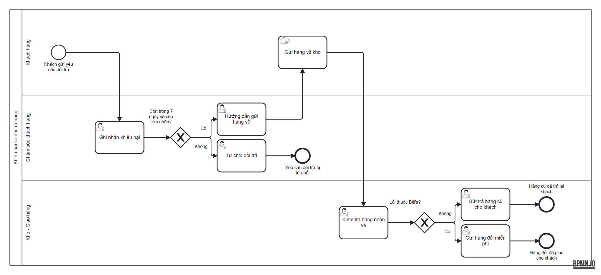

Mô hình hóa quy trình và BPMN
Vì sao phải vẽ quy trình, đọc và vẽ được sơ đồ BPMN (pool, lane, task, event, cổng XOR), rồi xem năm sơ đồ của nhóm dùng các ký hiệu đó ra sao và vì sao được sinh bằng script.
- Giải thích được mô hình quy trình giúp phát hiện thiếu sót yêu cầu như thế nào, và vì sao vẽ đường suôn sẻ trước rồi mới thêm ngoại lệ
- Đọc và đặt tên đúng các ký hiệu BPMN: pool, lane, task (user, service, manual), start và end event, cổng XOR, sequence flow
- Chỉ ra được trong năm sơ đồ của nhóm từng ký hiệu và đánh giá được chỗ đúng, chỗ chưa đạt
- Trả lời được vì sao file .bpmn được sinh bằng script, PNG xuất bằng gì, vì sao Khách hàng là một lane
1Kiến thức tổng quát: mô hình hóa quy trình và BPMN
Vì sao phải vẽ quy trình thay vì chỉ viết
Một danh sách dài các câu "hệ thống phải…" rất khó soát. Wiegers và Hokanson nhắc tới giới hạn trí nhớ ngắn hạn "7 ± 2": một người đọc kiểm được đúng, đủ, nhất quán cho khoảng năm đến mười yêu cầu, chứ không phải hàng trăm. Mô hình (model) là sơ đồ gom chi tiết thành các khối ở mức cao hơn, nên người xem nhìn ra lỗi dễ hơn.
Sách nêu bốn lợi ích của mô hình: cho biết mỗi yêu cầu nằm ở đâu trong bức tranh chung; vi phạm quy tắc vẽ có thể lộ ra chỗ thiếu hoặc sai; mỗi phần tử trong sơ đồ (một bước, một trạng thái) phải có chức năng tương ứng, nếu chưa có thì là yêu cầu còn thiếu; và khi hai mô hình của cùng một thông tin không khớp nhau thì chỗ lệch cho thấy yêu cầu sai, thiếu hoặc thừa.
Process flow (sơ đồ luồng quy trình) và BPMN
Loại mô hình cần cho bài này là process flow: các bước người hoặc tổ chức làm được vẽ thành hình chữ nhật, các quyết định thành hình thoi (Wiegers, tr. 23). Sách liệt kê BPMN là một trong nhiều ngôn ngữ mô hình hóa (cùng UML, SysML…) nhưng không dạy chi tiết ký hiệu. Phần ký hiệu mình lấy từ đặc tả và tài liệu Camunda.
BPMN (Business Process Model and Notation – ký hiệu mô hình hóa quy trình nghiệp vụ) 2.0 là chuẩn mở do OMG (Object Management Group) công bố, cũng là chuẩn ISO/IEC 19510:2013. Một quy trình BPMN là một tệp XML có kèm hình vẽ. Camunda mô tả rằng tệp này vừa là tài liệu cho người đọc, vừa là dữ liệu cho phần mềm, nên có thể xem như "mã nguồn và tài liệu trong một tệp".
Các ký hiệu cơ bản
Ví dụ ngoài đồ án: quán trà sữa mang đi, nhận một ly từ lúc khách gọi đến lúc giao.
| Ký hiệu | Nghĩa | Trong ví dụ quán trà sữa |
|---|---|---|
| Pool (khung lớn) | Khung của một quy trình. Đặt tên theo quy trình. | "Bán trà sữa mang đi" |
| Lane (làn) | Dải chia pool theo vai trò hoặc hệ thống chịu trách nhiệm; dùng để sắp xếp và phân loại các hoạt động. | Hai làn: Thu ngân, Pha chế |
| Start event (sự kiện bắt đầu, vòng tròn mảnh) | Cái làm quy trình chạy. | "Khách đặt một ly trà sữa" |
| Task (việc, hình chữ nhật bo góc) | Một đơn vị công việc. Có ba loại thường gặp, xem bên dưới. | "Nhận tiền", "Pha trà sữa", "Báo hết nguyên liệu và hoàn tiền" |
| Gateway XOR (cổng loại trừ, hình thoi có chữ X) | Chọn đúng một nhánh đi tiếp dựa trên dữ liệu. | "Còn đủ nguyên liệu?" với hai nhánh Có, Không |
| Sequence flow (đường nối trình tự, mũi tên) | Thứ tự các bước. | Mũi tên từ "Nhận tiền" tới cổng |
| End event (sự kiện kết thúc, vòng tròn đậm) | Kết quả cuối của một đường đi. | "Ly trà sữa đã giao khách", "Đơn đã hoàn tiền" |
Quán trà sữa này có 1 start, 3 task, 1 cổng, 2 end: tổng 7 nút và 6 đường nối. Cứ hình dung một "thẻ" đi từ start theo mũi tên, dừng ở mỗi task, qua cổng XOR thì chọn đúng một nhánh, tới end thì hết. Quy trình đúng khi mọi đường đi đều kết thúc ở một end event có nghĩa (cách hình dung này theo Camunda, 09-camunda-bpmn-primer).
Ba loại task
- User task (việc của người dùng): người làm với sự trợ giúp của phần mềm, việc nằm trong một danh sách việc nào đó (OMG 2.0.2, trang PDF 190). Quán trà sữa: thu ngân nhập đơn trên máy tính tiền.
- Service task (việc của dịch vụ): dùng một dịch vụ hoặc ứng dụng tự động (trang PDF 186). Quán: máy tự in tem đơn.
- Manual task (việc thủ công): làm mà không cần phần mềm điều hành quy trình hay ứng dụng nào; đặc tả lấy ví dụ thợ điện thoại lắp máy tại nhà khách (trang PDF 191). Quán: pha trà bằng tay.
Quy ước đặt tên và cách bố trí
Camunda khuyên đặt tên theo góc nhìn nghiệp vụ (16-camunda-quy-uoc-dat-ten). Mình tóm lại và diễn đạt lại:
| Phần tử | Cách đặt tên | Tên tốt | Tên chưa tốt |
|---|---|---|---|
| Task | Động từ nguyên mẫu + đối tượng; tránh động từ quá chung | "Nhận tiền" | "Xử lý đơn" |
| End event | Trạng thái đạt được (đối tượng + động từ ở thể đã xảy ra), nói rõ thành công hay thất bại | "Đơn đã hoàn tiền" | "Kết thúc", "Đơn đã xử lý" |
| Cổng XOR | Một câu hỏi; mỗi đường ra ghi câu trả lời | "Còn đủ nguyên liệu?" với "Có", "Không" | "Kiểm tra nguyên liệu" |
| Pool, lane | Pool theo tên quy trình; lane theo vai trò tổ chức hoặc hệ thống | Pool "Bán trà sữa mang đi"; lane "Pha chế" | Lane "Quận 1" |
Cổng gộp (nối các nhánh lại) và cổng song song thì không cần đặt tên. Ví dụ Camunda: "Invoice paid" cho biết trạng thái thành công rõ hơn "Invoice processed", và "Invoice rejected" nói rõ trạng thái thất bại; cùng chữ "processed" thì người đọc không biết là thành hay bại. Về bố cục (17-camunda-mo-hinh-de-doc): vẽ từ trái sang phải, luôn vẽ rõ start và end event, tránh đường nối chồng chéo hoặc quá dài.
Vẽ đường suôn sẻ trước, ngoại lệ sau
Camunda gọi đường đi mặc định có kết quả tốt là happy path (đường suôn sẻ). Thứ tự gợi ý (18-camunda-ngoai-happy-path): chọn kết quả cuối mong muốn, rồi sự kiện bắt đầu, rồi các hoạt động luôn phải làm. Sau đó thêm từng vấn đề một: với mỗi vấn đề, hỏi kết quả không mong muốn sẽ là gì (đó chính là một end event mới), rồi thêm cổng XOR đúng chỗ vấn đề có thể xảy ra. Chỉ vẽ ngoại lệ về nghiệp vụ; lỗi kỹ thuật như "không kết nối được máy chủ" không đưa vào sơ đồ nghiệp vụ.
2Ứng dụng trong đồ án: năm sơ đồ BPMN của nhóm
Nhóm vẽ 5 quy trình cho Biti's: 1 quy trình chung (cả nhóm) và 4 quy trình cá nhân. Số liệu dưới đây mình đếm bằng lệnh từ scripts/gd2/quy-trinh.js và đối chiếu với số phần tử trong chính các file .bpmn (khớp cả năm).
| Sơ đồ (pool) | Lane | Nút | Việc: người / hệ thống / thủ công | Cổng XOR có tên | End event | Đường nối |
|---|---|---|---|---|---|---|
| Từ lead trên website đến đơn hàng và chăm sóc sau bán (chung) | 6 | 23 | 9 / 1 / 1 | 5 (+1 cổng gộp) | 5 | 23 |
| Bán hàng cho đại lý | 3 | 14 | 7 / 1 / 0 | 2 | 3 | 14 |
| Khiếu nại và đổi trả hàng | 3 | 13 | 6 / 0 / 1 | 2 | 3 | 12 |
| Chiến dịch marketing và đồng ý nhận tin | 3 | 15 | 7 / 0 / 1 | 2 | 4 | 14 |
| Đơn hàng online đến khách hàng | 3 | 16 | 5 / 0 / 3 | 3 | 4 | 15 |
| Tổng | 81 | 14 | 19 | 78 |
Mỗi nút trong bảng gồm start event (1 ở mỗi sơ đồ), các việc, cổng và end event. Sơ đồ chung có thêm 1 cổng gộp không tên (sau "Duyệt chiết khấu" và nhánh bỏ qua việc duyệt); đây là cổng "nối nhánh lại", theo quy ước không cần đặt tên.
Ký hiệu ↔ ví dụ trong đồ án
| Ký hiệu | Ví dụ trong sơ đồ của nhóm |
|---|---|
| Pool | "Khiếu nại và đổi trả hàng". Mỗi file có đúng 1 pool (participant) và 0 message flow (đường nối giữa hai pool). |
| Lane | Sơ đồ chung có 6: Khách hàng, Marketing, Bán hàng, Quản lý, Kho - Giao hàng, Chăm sóc khách hàng. Cơ cấu phòng ban của Biti's không có nguồn công khai nên danh sách này là [GIẢ ĐỊNH] của nhóm (hiến chương docs/case-study-hien-chuong.md). |
| Start event | "Khách gửi yêu cầu đổi trả" (đổi trả); "Chiến dịch được duyệt" (marketing) |
| User task | "Ghi nhận khiếu nại": người làm trên màn hình Frappe CRM |
| Service task | "Giao lead cho nhân viên": Assignment Rule của Frappe tự chạy (sơ đồ chung và sơ đồ đại lý) |
| Manual task | "Gửi hàng về kho" (khách tự làm), "Thanh toán đơn hàng", "Nhận hàng hoàn về kho": làm ngoài Frappe |
| Cổng XOR | "Còn trong 7 ngày và còn tem nhãn?" với nhánh Có, Không |
| End event | "Hàng đổi đã giao cho khách", "Yêu cầu đổi trả bị từ chối" |

Đúng và chưa đạt
mau/mau-bpmn-2-lane.bpmn, cổng "Khách đồng ý?" có hai đường Có và Không cùng chảy vào một end event tên "Kết thúc". Người đọc không biết khách mua hay không. Cách sửa: hai end event khác tên, mỗi cái nêu một kết quả. Năm sơ đồ chính thức đã sửa như vậy: mỗi kết quả khác nhau có một end event riêng, tổng 19 end event.Cách bạn kiểm: mở file Nop-bai/Nhóm 04 - Đồ án CRM/Cá nhân/Khiếu nại và đổi trả - Nhóm 04.png, đếm: ba làn, hai hình thoi chữ X, ba vòng tròn đậm. Rồi đếm lại bằng lệnh: node -e "const q=require('./scripts/gd2/quy-trinh.js'); q.forEach(p=>console.log(p.pool, p.nodes.length, p.lanes.length))".
3Hiểu sâu đồ án: sơ đồ được làm ra thế nào và vì sao
Vì sao file .bpmn được sinh bằng script
Nhóm không vẽ tay từng ô trong phần mềm vẽ. Dữ liệu thuần của năm quy trình nằm ở scripts/gd2/quy-trinh.js: mỗi nút là một dòng [mã, kiểu, tên, lane, cột, độ lệch] với kiểu S (start), E (end), U (user task), V (service task), M (manual task), X (cổng XOR), J (cổng gộp); mỗi đường nối là [từ, đến, nhãn]. Bộ sinh scripts/gd2/sinh-bpmn.js (Node, không dùng thư viện ngoài) đọc bảng đó rồi ghi ra file BPMN 2.0 có cả bố cục. Lý do chọn cách này:
- Lặp lại được: đổi một tên hay thêm một nhánh ở bảng dữ liệu, chạy lại là có đủ năm file đồng bộ. Quy trình viết (SOP) sinh từ một tệp dữ liệu khác,
sop-du-lieu.js, cùng thư mục; hai tệp phải khớp tên nút với nhau và đó là việc nhóm phải tự giữ khớp (bài 2.6). - Tự kiểm lỗi bố cục: bộ sinh báo khi đường nối cắt ngang một nút, khi hai nút đè nhau, khi nhãn đè nút hoặc ra ngoài pool. Lần chạy cuối: 0 cảnh báo.
- Quy ước ID có tiền tố loại (
Task_,Gateway_,EndEvent_,Flow_), theo gợi ý đặt ID kỹ thuật của Camunda (19-camunda-dat-id-ky-thuat).
Phương án đã bỏ: vẽ tay trong Camunda Modeler. Chậm, khó lặp lại và không có kiểm tra đè nhau tự động. Cái giá của cách chọn: bố cục do thuật toán đơn giản (cột đều, lệch lên xuống ±45 px) nên không đẹp bằng người vẽ cẩn thận. Lỗi nhóm gặp lúc thiết kế: hai task cùng cột lệch 60 px thì đè nhau (task cao 80 px) nên đổi thành lệch ±45; tên task ba dòng đè biểu tượng nên rút gọn và mở rộng task lên 120 px.
PNG xuất bằng gì, Camunda Modeler và "Camunda 7"
- PNG được xuất bằng bpmn-js 18.33.1 (bộ vẽ mà Camunda Modeler cũng dùng) trong trình duyệt Edge chạy ẩn, chụp qua giao thức DevTools, hệ số phóng 1,5 (
scripts/gd2/xuat-png.js). Ảnh có logo "bpmn.io" ở góc dưới phải vì giấy phép bpmn-js yêu cầu giữ. bpmn-js nạp cả 5 file với 0 cảnh báo. - Nói thật: ảnh không xuất bằng menu File, Export của Camunda Modeler. Nhóm đã cài Camunda Modeler 5.51.1 bằng winget (docs/phase-report.md, mục 0.5) nhưng chưa mở 5 file này trong Modeler thật để xác nhận; đây là việc còn lại của giai đoạn 2. Tài liệu Camunda đã tải cũng không có hướng dẫn xuất PNG.
- "Camunda 7" hay "Camunda 8"? Camunda Modeler hỗ trợ cả hai loại engine (02-camunda-desktop-modeler). Khi tạo file mới, Modeler hỏi file nhắm engine nào; file mẫu của nhóm chọn "Camunda 7". Hình vẽ BPMN 2.0 như nhau cho cả hai. Năm file nhóm sinh ra không chứa thuộc tính riêng của Camunda (mình tìm
camunda:vàzeebe:, 0 kết quả) và ghiisExecutable="false", tức là BPMN 2.0 thuần để đọc, chưa gắn engine nào.
Quyết định "Khách hàng là một lane"
Khách không thuộc Biti's nhưng nhóm vẽ Khách hàng (và Đại lý) thành một lane trong cùng pool. Cách chuẩn khác theo đặc tả BPMN là cho khách một pool riêng, nối với pool của Biti's bằng message flow (đường đứt nét chỉ tin nhắn). Nhóm chọn cách đơn giản vì ít đường chéo hơn và vẫn đọc được. Đây là quyết định của nhóm (hiến chương liệt kê Khách hàng trong danh sách lane), không phải quy định của BPMN. Đổi lại, sơ đồ không phân biệt được "việc của một bên khác tổ chức" với "việc nội bộ" bằng ký hiệu.
Cái nào của Frappe, cái nào của nhóm
| Thành phần | Của ai | Ghi chú |
|---|---|---|
| Sơ đồ BPMN, file .bpmn, .png, bộ sinh | Nhóm | Frappe CRM không có bộ vẽ BPMN và không nạp file .bpmn. Frappe có cơ chế Workflow riêng (docs ERPNext 40–46) mà nhóm chưa dùng. |
| Assignment Rule (nút "Giao lead cho nhân viên") | Cơ chế của Frappe; luật theo địa bàn do nhóm cấu hình ở GĐ1 | Đây là chỗ duy nhất "hệ thống tự làm" trong sơ đồ. |
| Danh sách 6 lane | Nhóm | [GIẢ ĐỊNH]; ánh xạ sơ bộ sang các nhóm người dùng (User Group) đã tạo ở GĐ1. |
Thầy sẽ hỏi
| Câu hỏi | Gợi ý trả lời, kèm bằng chứng |
|---|---|
| Pool và lane khác nhau thế nào? | Pool là một quy trình; lane chia pool theo vai trò hoặc hệ thống. Nhóm để Khách hàng là một lane cho đơn giản; cách chuẩn hơn là pool riêng nối bằng message flow. Chỉ file Khiếu nại và đổi trả - Nhóm 04.png. |
| Sao end event đặt tên thế này? | Camunda: end event nêu trạng thái kết quả, không viết "Kết thúc" (16-camunda-quy-uoc-dat-ten). Mình đã tìm bằng lệnh trong cả 5 file, không còn tên "Kết thúc". |
| Sao không vẽ tay mà dùng script? | Lặp lại được, sửa một chỗ trong bảng dữ liệu là có lại đủ năm file, tự kiểm đè nhau. Mở scripts/gd2/quy-trinh.js và sinh-bpmn.js. |
| Ảnh này vẽ bằng Camunda Modeler à? | Không. Ảnh xuất bằng bpmn-js 18.33.1 trong Edge ẩn; nhóm chưa mở file trong Modeler thật. Nói thẳng, kèm nói đó là việc còn lại. |
| Camunda 7 hay 8? | File nhóm là BPMN 2.0 thuần (isExecutable="false", không thuộc tính camunda:/zeebe:), chưa gắn engine. File mẫu chọn "Camunda 7" khi tạo. |
| 6 lane lấy từ đâu? | Cơ cấu phòng ban của Biti's không công khai nên là [GIẢ ĐỊNH] trong hiến chương; còn ngoại lệ như đổi trả 7 ngày thì có nguồn bitis.com.vn (bài 2.2). |
Tài liệu tham khảo của bài
- Wiegers & Hokanson (2024), Software Requirements Essentials: Chương 4, thực hành #11 "Create requirements models", tr. 15–29 trong bản trích của chương (mô hình, process flow, nhắc tới BPMN)
- OMG, Business Process Model and Notation 2.0.2 (ISO/IEC 19510:2013): tai-lieu-chinh-thong/bpmn/01-omg-bpmn-2.0.2.pdf: bảng tóm tắt phần tử (trang PDF 57); Service Task (PDF 186), User Task (PDF 190), Manual Task (PDF 191)
- Camunda docs: 09-camunda-bpmn-primer.txt; 16-camunda-quy-uoc-dat-ten.txt (quy ước đặt tên); 17-camunda-mo-hinh-de-doc.txt (mô hình dễ đọc); 18-camunda-ngoai-happy-path.txt (đường suôn sẻ và ngoại lệ). Đều trong tai-lieu-chinh-thong/bpmn/, URL gốc ghi ở INDEX.md
- Tệp của nhóm: scripts/gd2/quy-trinh.js, sinh-bpmn.js, xuat-png.js; Nop-bai/Nhóm 04 - Đồ án CRM/ (5 file .bpmn và .png); docs/phase-report.md mục Giai đoạn 2; mau/mau-bpmn-2-lane.bpmn
Bài giảng diễn đạt lại bằng lời của nhóm, không sao chép giáo trình. Chương và trang ghi để bạn tra lại bản gốc.